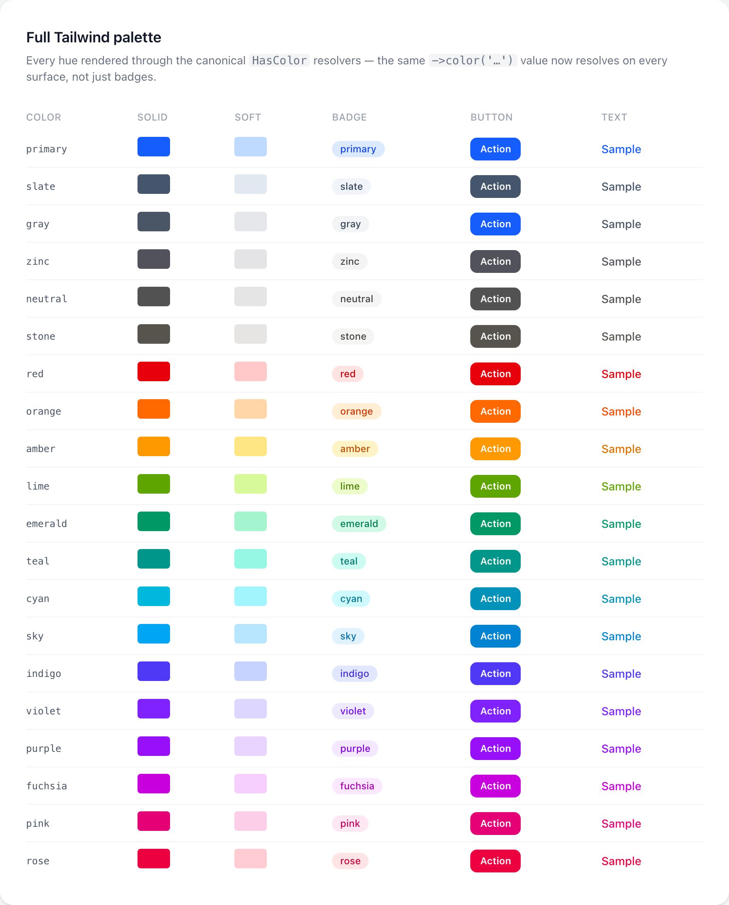

Core
Foundation
Foundation je trvalé jádro wire-core. Poskytuje sdílené traity, základní třídy, ikony, barvy a Blade komponenty používané všemi ostatními moduly a balíčky.

Na této stránce
- Concerny (traity)
- Konfigurace komponenty
- Stav a chování
- Infrastruktura
- Specifické pro akce
- Vyhodnocování closur
- Základní třídy
- Ikony
- Použití v Blade
- Použití v PHP
- Dostupné ikony
- Wire-friendly aliasy
- Přístupnost
- Přidávání vlastních ikon
- 1. Ze složky SVG souborů (nejjednodušší)
- 2. Inline, podle názvu
- 3. Znovupoužitelná sada ikon (pokročilé)
- Použití více sad ikon
- Výměna výchozí (neprefixované) sady
- Odchytávání překlepů
- Regenerace přibalených Heroicons
- Barvy
- Kanonické color resolvery (HasColor)
- Kanonické resolvery velikosti a typografie
- Type-safe hodnotové enumy
- Enumy
- Opt-in enum kontrakty
- Support utility
- Blade komponenty
- Layoutové komponenty
- Samostatné Blade tagy
Foundation je trvalé jádro wire-core. Poskytuje sdílené traity, základní třídy, ikony, barvy a Blade komponenty používané všemi ostatními moduly a balíčky.
Concerny (traity)
Konfigurace komponenty
| Trait | Metody | Popis |
|---|---|---|
HasLabel |
label($label), translateLabel(), getLabel() |
Zobrazovací label |
HasDescription |
description($text), getDescription() |
Popisný text |
HasHelperText |
helperText($text), getHelperText() |
Helper text pod polem |
HasHint |
hint($text), hintIcon($icon), getHint() |
Hint text/ikona |
HasName |
name($name), getName() |
Identifikátor |
HasDefault |
default($value), getDefault() |
Výchozí hodnota |
HasIcon |
icon($name, $position), getIcon() |
Ikona podle názvu (pencil nebo prefix:name) |
HasColor |
color($color), getColor() |
Název Tailwind barvy |
HasSize |
size($size), getSize() |
Varianta velikosti (sm/md/lg/xl) |
HasColumns |
columnSpan($span), columnStart($start) |
Layout sloupců gridu |
HasExtraAttributes |
extraAttributes(array $attrs) |
Libovolné HTML atributy |
Stav a chování
| Trait | Metody | Popis |
|---|---|---|
HasState |
state($value), getState(), live(), debounce($ms) |
Livewire vazba stavu |
HasVisibility |
hidden($condition), visible($condition), isHidden() |
Podmíněná viditelnost |
HasDisabled |
disabled($condition), isDisabled() |
Disabled stav |
HasValidation |
required(), rules($rules), validationMessages($msgs) |
Validační pravidla |
Infrastruktura
| Trait | Metody | Popis |
|---|---|---|
HasMake |
static make(...$args) |
Statická factory |
HasEvaluate |
evaluate($value, $params) |
Vyhodnocení closura-nebo-hodnota s DI |
HasSchema |
schema(array $components), getSchema() |
Pole dětských komponent |
HasHtmlAttributes |
htmlAttributes(), getHtmlAttributes() |
Sloučené HTML atributy |
EvaluatesClosures |
evaluate($value, $record, ...) |
Per-záznam resolvování closur |
Specifické pro akce
| Trait | Metody | Popis |
|---|---|---|
HasDynamicProperties |
resolve($record) |
Per-záznam resolvování vlastností |
HasKeyboardShortcut |
keyboardShortcut($keys) |
Alpine.js klávesová vazba |
HasLifecycle |
before($fn), after($fn), halt() |
Before/after hooky s halt |
HasLoadingState |
loadingIndicator(), debounce($ms) |
UI stav načítání |
HasModal |
requiresConfirmation(), modalHeading(), slideOver(), ... |
Konfigurace modalu |
CSS třídy tlačítek/badge pocházejí z kanonických
HasColorresolverů (viz Kanonické color resolvery), ne z per-komponentní mapy.HasButtonStyleszůstává jen jako deprecated alias.
Vyhodnocování closur
Všechny konfigurační metody přijímají skalární hodnoty i closury:
// SkalárTextColumn::make('name')->label('Full Name'); // Closura — vyhodnocená per záznam v čase renderuTextColumn::make('name')->label(fn (User $record) => "Name: {$record->name}"); // Closura s dependency injectionAction::make('edit')->hidden(fn (User $record, Table $table) => ! $table->isEditable());Základní třídy
| Třída | Namespace | Popis |
|---|---|---|
Component |
Foundation\Components |
Abstraktní základ — make(), name, key |
ViewComponent |
Foundation\Components |
Komponenta vykreslující Blade pohled |
LayoutComponent |
Foundation\Components |
Komponenta s dětskou schema() |
// Všechny komponenty používají vzor statické factory$field = TextInput::make('email');$column = TextColumn::make('name');$action = Action::make('delete');Ikony
Kompletní kolekce Heroicons solid (324 ikon,
20x20 viewBox) je přibalena inline — bez externích závislostí, bez extra balíčku.
Je to výchozí sada, adresovaná holými názvy (pencil, user). Můžete
zaregistrovat libovolný počet dalších sad (Lucide, Feather, vlastní brand ikony)
vedle ní — viz Použití více sad ikon.
Každá ikona nese svůj vlastní viewBox a fill/stroke stylování, takže 20×20 fill-based
Heroicons a 24×24 stroke-based sady se vykreslí správně vedle sebe.
Použití v Blade
<x-wire::icon name="check" class="w-5 h-5" /><x-wire::icon name="trash" class="w-4 h-4 text-red-500" /> {{-- Prefixovaná ikona z jiné registrované sady --}}<x-wire::icon name="lucide:home" class="w-5 h-5" /> {{-- Vystavit asistivní technologii (jinak je ikona aria-hidden) --}}<x-wire::icon name="trash" label="Delete" />Použití v PHP
use NyonCode\WireCore\Foundation\Icons\IconManager; $manager = app(IconManager::class); $manager->render('check'); // plný <svg> řetězec$manager->render('trash', 'w-5 h-5', 'text-red-500', label: 'Delete');$manager->has('lucide:home'); // bool$manager->resolve('check'); // ?ResolvedIcon (body + viewBox + attrs)$manager->allNames(); // každý dostupný název (prefixovaný pro ne-výchozí sady)render() je kanonický vstupní bod — aplikuje vlastní viewBox a stylování každé
ikony. getPath() vrací jen vnitřní markup a je zachován jen pro volající,
kteří obalují svůj vlastní <svg> (správné jen pro 0 0 20 20 fill ikony).
Dostupné ikony
Každá výchozí ikona používá svůj kanonický Heroicons název — název souboru z heroicons.com (solid varianta). Procházejte celou sadu tam; pár příkladů:
academic-cap, arrow-down-tray, bars-3, chevron-up, cog-6-tooth,
document-text, envelope, funnel, magnifying-glass, pencil, qr-code,
trash, user, wrench-screwdriver, x-mark.
Pro IDE autocompletion můžete na ikony odkazovat přes enum Icon místo
surových řetězců:
use NyonCode\WireCore\Foundation\Icons\Icon; Action::make('edit')->icon(Icon::pencilSquare);Wire-friendly aliasy
Malá sada krátkých aliasů mapuje na kanonické ikony pro pohodlí:
| Alias | Resolvuje na | Alias | Resolvuje na |
|---|---|---|---|
pen, edit |
pencil |
delete |
trash |
view |
eye |
add |
plus |
download, export |
arrow-down-tray |
upload, import |
arrow-up-tray |
duplicate, copy |
document-duplicate |
x, close |
x-mark |
settings |
cog |
mail, email |
envelope |
exclamation, warning |
exclamation-triangle |
information, info |
information-circle |
question |
question-mark-circle |
archive |
archive-box |
refresh |
arrow-path |
shield |
shield-check |
lock |
lock-closed |
filter |
funnel |
more, dots-vertical |
ellipsis-vertical |
dots-horizontal |
ellipsis-horizontal |
external-link |
arrow-top-right-on-square |
Přístupnost
Ikony se ve výchozím stavu vykreslují jako dekorativní (aria-hidden="true"). Předejte label, když
ikona nese význam sama o sobě — pak je vystavena jako obrázek s tím
labelem (role="img" + aria-label):
<x-wire::icon name="check-circle" label="Verified" />Přidávání vlastních ikon
Nemusíte se spokojit s přibalenou sadou. Vyberte přístup, který vám sedí. Vlastní
ikony (složky a inline) jsou holo-pojmenované a mají prioritu před výchozí
sadou, takže se vlastní ikona použije všude, kde je název přijímán
(->icon('logo'), <x-wire::icon name="logo" />, …).
Když vložíte kompletní <svg>…</svg>, jeho viewBox a stylovací atributy
(fill, stroke, stroke-width, …) jsou zachovány — takže můžete vhodit ikony
z jakéhokoli zdroje a formátu. Holý <path> fragment spadne na Heroicons
solid formát (0 0 20 20, fill="currentColor").
1. Ze složky SVG souborů (nejjednodušší)
Vhoďte .svg soubory do adresáře a zaregistrujte cestu — název souboru se stane
názvem ikony (logo.svg → logo). Žádná třída, žádný boilerplate.
Přes config (config/wire-core.php), skvělé pro ikony pro celou aplikaci. Řetězcový klíč přidá
pomlčkou spojený prefix názvu a předchází kolizím názvů souborů mezi složkami:
'icons' => [ 'paths' => [ resource_path('icons'), // resources/icons/logo.svg => "logo" 'brand' => resource_path('icons/brand'), // icons/brand/mark.svg => "brand-mark" ],],Nebo za běhu:
use NyonCode\WireCore\Foundation\Icons\IconManager; app(IconManager::class)->registerIconsFromDirectory( resource_path('icons/brand'), prefix: 'brand', // brand/logo.svg => "brand-logo");
prefixsložky produkuje plochý název (brand-logo) — není to totéž jakoprefix:namenamespace sady popsaný níže.
2. Inline, podle názvu
Zaregistrujte jednotlivé ikony — vložte plný <svg>…</svg> (wrapper je odstraněn,
jeho viewBox/stylování zachováno) nebo jen vnitřní <path>:
app(IconManager::class)->registerIcons([ 'logo' => '<svg viewBox="0 0 20 20"><path d="M10 2 …"/></svg>', 'spark' => '<path d="M10 1 12 8 …"/>',]);Znovupoužijte stejný název jako přibalená ikona pro její přepis. Vložte volání do
boot() service provideru, aby byly ikony dostupné všude:
public function boot(): void{ app(IconManager::class)->registerIconsFromDirectory(resource_path('icons'));}3. Znovupoužitelná sada ikon (pokročilé)
Pro kompletní, vyměnitelný styl implementujte IconSet. Implementujte i volitelnou
schopnost ProvidesIconMetadata, pokud jsou vaše ikony stroke-based nebo používají
ne-20x20 viewBox (Lucide, Feather, Heroicons outline) — to nechá každou ikonu
nést svůj vlastní ResolvedIcon (body + viewBox + atributy):
use NyonCode\WireCore\Foundation\Icons\{IconSet, ProvidesIconMetadata, ResolvedIcon}; final class LucideIconSet implements IconSet, ProvidesIconMetadata{ private string $dir = '/abs/path/to/node_modules/lucide-static/icons'; public function getIcon(string $name): ?ResolvedIcon { $file = "{$this->dir}/{$name}.svg"; // fromSvg() zachová Lucide viewBox="0 0 24 24" + fill=none stroke=currentColor. return is_file($file) ? ResolvedIcon::fromSvg(file_get_contents($file)) : null; } public function getPath(string $name): ?string { return $this->getIcon($name)?->body; } public function has(string $name): bool { return is_file("{$this->dir}/{$name}.svg"); } public function names(): array { /* basenames of *.svg */ return []; }}Sady, které implementují jen IconSet, stále fungují — jejich getPath() výstup se obalí
do výchozího 0 0 20 20 fill formátu.
Použití více sad ikon
Resolvování je deterministické a namespaced:
- Výchozí sada je neprefixovaná —
pencil,user,lucidealiasy, vlastní ikony — a je vždy Heroicons, dokud ji nevyměníte (níže). - Každá další sada vyžaduje unikátní prefix a adresuje se jako
prefix:name.
Zaregistrujte další sady v configu pod jejich prefix klíčem:
// config/wire-core.php'icons' => [ 'default_set' => 'default', 'sets' => [ 'default' => DefaultIconSet::class, // → "pencil" (Heroicons, 20×20 fill) 'lucide' => LucideIconSet::class, // → "lucide:home" (24×24 stroke) 'custom' => App\Wire\Icons\MyIconSet::class, ],],<x-wire::icon name="pencil" /> {{-- Heroicons --}}<x-wire::icon name="lucide:home" /> {{-- Lucide --}}To zaručuje, že sady nikdy nekolidují: holý název je vždy výchozí sada,
prefixovaný název je vždy přesně ta sada. Kvůli tomu registrace ne-výchozí
sady bez prefixu vyhodí InvalidArgumentException:
app(IconManager::class)->registerIconSet(new LucideIconSet, 'lucide'); // okapp(IconManager::class)->registerIconSet(new LucideIconSet); // vyhodíOddělovač je dvojtečka (
:). Názvy ikon samy používají pomlčky (arrow-down-tray), takže není žádná nejednoznačnost. Použijtedefault:namek adresování základní sady explicitně.
Výměna výchozí (neprefixované) sady
Aby se jiná sada stala neprefixovaným základem — např. dodat Lucide jako váš primární
styl — nasměrujte default_set na její klíč:
'icons' => [ 'default_set' => 'lucide', // holé názvy teď resolvují vůči Lucide 'sets' => [ 'lucide' => LucideIconSet::class, 'default' => DefaultIconSet::class, // stále dostupné jako "default:pencil" ],],Za běhu: app(IconManager::class)->setDefaultIconSet(new LucideIconSet).
Odchytávání překlepů
Nastavte icons.warn_missing (nebo WIRE_ICONS_WARN_MISSING=true) pro logování varování,
kdykoli se vykreslí neznámý název ikony — stále vykreslí fallback
placeholder, ale log pomáhá odhalit překlepy ve vývoji.
Regenerace přibalených Heroicons
Přibalené cesty žijí v generovaném PHP data souboru
packages/core/resources/icons/heroicons-solid.php, produkovaném z oficiálního
npm balíčku heroicons (20/solid SVG, klíčované názvem souboru). Regenerujte ten
soubor místo ruční editace cest ikon.
Barvy
->color() přijímá kompletní Tailwind paletu na každém surface. Dva slovníky
resolvují přes stejnou kanonickou mapu:
Sémantické role
Základní odstíny
Achromatické (adaptivní)
Sémantické role — pevné brand odstíny nesoucí význam:
| Název | Resolvuje na |
|---|---|
primary |
Brand primary |
success (alias emerald) |
Emerald |
danger |
Red |
warning (alias amber) |
Amber |
info |
Cyan |
gray (alias secondary) |
Neutrální šedá |
Surové rodiny odstínů — každá Tailwind barva, pro jemnější kontrolu:
blue, green, red, yellow, cyan, slate, zinc, neutral, stone,
orange, lime, teal, sky, indigo, violet, purple, fuchsia, pink,
rose.
Literal odstíny nejsou aliasy.
blue,greenayellowjsou vlastní literal Tailwind odstíny —blueje odlišný od přebarvitelného brandprimary,greenodsuccess/emeraldayellowodwarning/amber.redacyanvykreslí stejný odstín jakodanger/info, ale zůstávají dostupné pod svým jménem.
Achromatické krajní body — white a black. Tailwind nemá číselnou škálu
white/black, takže se resolvují adaptivně: black je tmavá výplň/inkoust ve
světlém režimu a překlopí se na bílou v tmavém, white je opačně — takže zůstanou
čitelné v obou motivech.
Action::make('delete')->color('danger'); // sémantická roleAction::make('archive')->color('teal'); // surový odstínBadgeColumn::make('status')->colors([ 'active' => 'success', 'pending' => 'warning', 'inactive' => 'danger',]);Type-safe enum Foundation\Colors\Color má case pro každou z těchto
(Color::Danger, Color::Teal, …). Každá barva resolvuje na Tailwind utility třídy
pro bg, text, border, ring a hover varianty — stejná hodnota se vykreslí identicky
na badge, solid/outlined/link tlačítku, modalu, choice kartě a chart baru.
Kanonické color resolvery (HasColor)
Foundation\Concerns\HasColor je jediný zdroj pravdy pro mapování barva → Tailwind
třída. Každý surface na něj deleguje místo re-enkódování match map,
takže sémantická barva resolvuje na stejný odstín všude (success → emerald,
info → cyan, primary → váš brand akcent), zatímco literal odstíny jako blue,
green a yellow a adaptivní krajní body white/black resolvují samy na sebe.
| Resolver | Surface |
|---|---|
getSolidColorClasses() |
vyplněné tlačítko (bg + text + hover + focus + dark) |
getOutlinedColorClasses() |
outlined tlačítko |
getGhostColorClasses() |
dropdown / položka menu |
getIconButtonColorClasses() |
tlačítko jen s ikonou |
getLinkColorClasses() |
text/link tlačítko (podtržení při hoveru) |
getSolidBgClass() / getSoftBgClass() |
jen holá výplň (dráha toggle on/off, count badge) |
getBadgeColorClasses() |
soft „pill" badge (bg + text) |
getTextColorClasses() |
jen foreground text tint |
getChoiceColorClasses() |
balík selected stavu radio/segmented/karta |
getModalSubmitButtonClasses() |
modal confirm/submit tlačítko |
getModalIconBgClass() / getModalIconTextClass() |
modal icon chip |
getGradientFillClasses() / getFillTextClasses() |
bar-chart výplň + akcent (literal chart odstíny) |
Při přidávání barvy nebo surface rozšiřte resolver zde jednou — navazující sloupce, badge, akce a toggly ho vyzvednou automaticky. Udržujte utility názvy kompatibilní s nejnižší podporovanou verzí Tailwindu (viz ADR 0005); používejte jen standardní názvy odstínů, nikdy verzí-specifické.
Kanonické resolvery velikosti a typografie
Sourozenecké single-source resolvery, používané stejně jako HasColor — rozšiřte jednou,
každý surface je vyzvedne a řetězce tříd zůstanou literální pro Tailwind JIT
scanner.
| Resolver | Surface |
|---|---|
HasSize::getBadgeSizeClasses($size) |
padding + velikost písma soft „pill"/badge |
HasSize::getButtonSizeClasses($size, $iconOnly) |
škála paddingu tlačítka (akční tlačítka, triggery skupin akcí, ButtonColumn); $iconOnly vrací čtvercový padding |
HasFontWeight::getFontWeightClasses($weight) |
font-* weight utility (sloupce tabulky, infolist entries); neznámý weight → font-normal |
Modals\Concerns\HasModalProperties::getMaxWidthClass($width, $responsive) |
modal max-w-* (vycentrované dialogy gatují na sm:; slide-overy předávají responsive: false) |
Type-safe hodnotové enumy
Každý fluent setter, který bere řetězcový token, přijímá také kanonický enum z
Foundation\Enums\ — ->size('lg') a ->size(Size::Lg) jsou zaměnitelné a
řetězcová forma zůstává plně podporovaná. Každý enum je jediný vlastník svého slovníku
(values() + resolve()), takže token resolvuje na stejnou utility na každém surface a
neznámé tokeny spadnou na rozumný výchozí místo emitování nescannovatelné třídy.
| Enum | Tokeny | Settery, které ho přijímají |
|---|---|---|
Colors\Color |
sémantické role + každý surový odstín (viz Barvy) | ->color() všude |
Enums\Breakpoint |
sm md lg xl 2xl |
sloupec ->visibleFrom() / ->hiddenFrom() / ->mobileBreakpoint(), Table::stackedOnMobile(), ->mobileBreakpoint() na sheetech/modalech, Grid per-breakpoint columns klíče |
Enums\Size |
xs sm md lg xl |
->size() (+ zkratky ->sm()/->md()/…) na akcích, tlačítkách, badge/icon sloupcích |
Enums\FontWeight |
thin extralight light normal medium semibold bold extrabold black |
sloupec ->weight(), infolist TextEntry::weight() |
Enums\Alignment |
left center right |
sloupec ->alignment(), Table::actionsAlignment() |
Enums\IconPosition |
before after |
->icon($icon, $position) na akcích, tlačítkách, polích |
Enums\Placement |
bottom-start bottom-end top-start top-end |
ActionGroup::dropdownPosition() |
Enums\ModalWidth |
sm md lg xl 2xl … 7xl full |
->width() / ->modalWidth() na modalech, slide-overech, action modalech |
use NyonCode\WireCore\Foundation\Enums\{Alignment, Breakpoint, ModalWidth, Size}; TextColumn::make('email')->visibleFrom(Breakpoint::Md)->alignment(Alignment::Right);Action::make('edit')->size(Size::Lg)->modalWidth(ModalWidth::TwoXl);Enumy Breakpoint, Alignment a Placement navíc vlastní literální Tailwind
třídy, na které jejich tokeny mapují (Breakpoint::Md->tableCellClass(), Alignment::Right->textClass(),
Placement::TopEnd->originClass()), takže mapa tříd má jednoho vlastníka a Blade konzumuje scannovatelnou
utility místo interpolace text-{$align}.
Enumy
PHP enumy nelze stringifikovat pomocí (string) $enum, přesto Eloquent enum casty předávají surovou
instanci každému display a state surface. EnumResolver je jediný kanonický vlastník, který
normalizuje takové hodnoty; navazující balíčky (table, forms, infolists, exports) na něj delegují
místo re-enkódování (string) $enum nebo lokálních match map.
use NyonCode\WireCore\Foundation\Support\EnumResolver; EnumResolver::scalar($value); // backed enum → ->value, unit enum → název case, jinak passthroughEnumResolver::label($value); // getLabel() → metoda label() → headline(název case); ne-enum passthroughEnumResolver::display($value); // label() + array/JSON → kompaktní JSON; (string)-safe všudeEnumResolver::color($value); // HasColor → getColor(), jinak nullEnumResolver::icon($value); // HasIcon → getIcon(), jinak nullEnumResolver::isEnum($value); // bool — je to instance enumu? EnumResolver::isEnumClass($value); // bool — je to enum class-string?EnumResolver::options(Status::class); // [value => label] mapa z case enumuEnumResolver::normalizeOptions($value); // třída enumu → options() mapa; pole projdou skrzPoužijte scalar() pro klíče map, porovnání a copy hodnoty; display() (nebo label()), kdekoli se
hodnota zobrazuje. Ne-enum hodnoty vždy projdou beze změny, takže je bezpečné helpery volat na
cokoli.
options() pohání Filament-style enum-jako-options zkratku: jakýkoli option-based surface —
form Select / Radio / CheckboxList (přes sdílený trait WireForms\Concerns\HasOptions),
table SelectColumn a SelectFilter, plus generický Column::editable() / filterable() /
filterAsSelect() — přijímá ->options(Status::class) a deleguje rozvinutí sem. Každý case
klíčuje přes scalar() a labeluje přes stejné kanonické label() resolvování, takže option čte
identicky jako odpovídající display buňka. Jednohodnotové form pole, jehož options pocházejí z enumu,
také získá automatické in: validační pravidlo (viz Formuláře → Select).
Opt-in enum kontrakty
Enum použitý jako cast může implementovat kterýkoli z těchto pro řízení bohatšího vykreslení. Žijí pod
Foundation\Contracts\Enum\ a jsou odlišné od builder-facing Foundation\Contracts\HasLabel
/ HasIcon (které nesou fluent settery pro komponenty).
| Kontrakt | Metoda | Efekt |
|---|---|---|
Enum\HasLabel |
getLabel(): ?string |
Display surface vykreslí tento label místo výchozího headline názvu case |
Enum\HasColor |
getColor(): string|Color|null |
BadgeColumn / IconColumn / IconEntry auto-resolvují barvu |
Enum\HasIcon |
getIcon(): string|Icon|null |
Stejné surface auto-resolvují ikonu |
use NyonCode\WireCore\Foundation\Colors\Color;use NyonCode\WireCore\Foundation\Contracts\Enum\HasColor;use NyonCode\WireCore\Foundation\Contracts\Enum\HasLabel; enum OrderStatus: string implements HasColor, HasLabel{ case Pending = 'pending'; case Paid = 'paid'; public function getLabel(): ?string { return ucfirst($this->value); } public function getColor(): string|Color|null { return $this === self::Paid ? Color::Success : Color::Warning; }}Použití na úrovni sloupce viz Table → Enum a JSON casty.
Support utility
| Třída | Popis |
|---|---|
EvaluatesClosures |
Trait — vyhodnocuje closura-nebo-hodnota s injekcí parametrů |
ArrayDotHelper |
Přístup tečkovou notací: get('user.name', $array), set(), has(), forget() |
EnumResolver |
Statický — kanonický normalizér enum/pole (scalar, label, display, color, icon, options) |
Blade komponenty
Foundation poskytuje základní komponenty pod namespace wire:::
{{-- Ikona --}}<x-wire::icon name="check" /> {{-- Badge --}}<x-wire::badge color="success">Active</x-wire::badge> {{-- Tlačítko --}}<x-wire::button color="primary" size="sm">Save</x-wire::button> {{-- Dropdown --}}<x-wire::dropdown> <x-slot:trigger>Options</x-slot:trigger> <x-wire::dropdown.item>Edit</x-wire::dropdown.item> <x-wire::dropdown.item>Delete</x-wire::dropdown.item></x-wire::dropdown>Layoutové komponenty
Kanonický layout slovník žije v NyonCode\WireCore\Foundation\Schema\* a je sdílený jak
formuláři, tak infolisty (forms Layout\* třídy rozšiřují core verze). Použijte je v jakémkoli
->schema([...]) poli místo ad-hoc Blade gridů.
| Komponenta | Účel |
|---|---|
Grid |
Responzivní sloupcový grid |
Section |
Titulovaná karta s nadpisem/popisem |
Fieldset |
Ohraničená skupina s legendou |
Flex |
Flexbox řada vedle sebe, která se na mobilu skládá |
Tabs / Tab |
Záložkové panely |
Wizard / Step |
Vícekrokový layout |
Callout |
Jemný barevný upozorňovací box |
EmptyState |
Ikona + nadpis + popis + akce |
use NyonCode\WireCore\Foundation\Schema\{Grid, Section, Flex, Callout}; Section::make('Team') ->description('People with access.') ->schema([ // Int reflow, nebo Filament-style per-breakpoint mapa. Grid::make()->columns(['default' => 1, 'md' => 2, 'lg' => 3])->schema([...]), ]); // Flex: řídit rozdělení, zarovnání, mezery, wrap a růst potomků.Flex::make()->from('md')->justify('between')->align('center')->gap(6)->wrap()->grow(false)->schema([...]); // Callout — odstíny barev delegují na kanonickou alert paletu.Callout::make()->warning()->heading('Heads up')->icon('exclamation-triangle')->dismissible() ->content('Something worth noticing.');Callout je sdílený vlastník upozorňovacího surface; forms Alert pole je jeho field-style alias.
Počty sloupců (Grid, CheckboxList, Section, …) přijímají int nebo per-breakpoint mapu klíčovanou
default/sm/md/lg/xl/2xl.
Samostatné Blade tagy
Stejné layouty jsou také vystaveny jako slot-based wire:: tagy pro prosté Blade pohledy (bez schema pole):
<x-wire::callout color="warning" heading="Storage almost full" icon="exclamation-triangle" dismissible> You have used 95% of your quota.</x-wire::callout> <x-wire::grid :columns="['default' => 1, 'md' => 2, 'lg' => 3]" gap="gap-3">…</x-wire::grid> <x-wire::flex from="md" justify="between" align="center" :gap="4">…</x-wire::flex> <x-wire::section heading="Profile" description="Basic info">…</x-wire::section><x-wire::fieldset legend="Billing address">…</x-wire::fieldset> <x-wire::empty-state icon="outline:inbox" heading="No invoices yet" description="They will show up here."> <button>New invoice</button> {{-- slot se stane řádkem akcí --}}</x-wire::empty-state> {{-- Alpine-driven; jen client-side stav (bez per-step validace) --}}<x-wire::tabs> <x-wire::tab label="Profile">…</x-wire::tab> <x-wire::tab label="Security">…</x-wire::tab></x-wire::tabs> <x-wire::wizard> <x-wire::step label="Account">…</x-wire::step> <x-wire::step label="Confirm">…</x-wire::step></x-wire::wizard>Pro validované vícekrokové toky použijte action-modal wizardy (HasModal::steps()) nebo form schema Wizard
místo toho — samostatné <x-wire::tabs> / <x-wire::wizard> jen přepínají panely client-side.